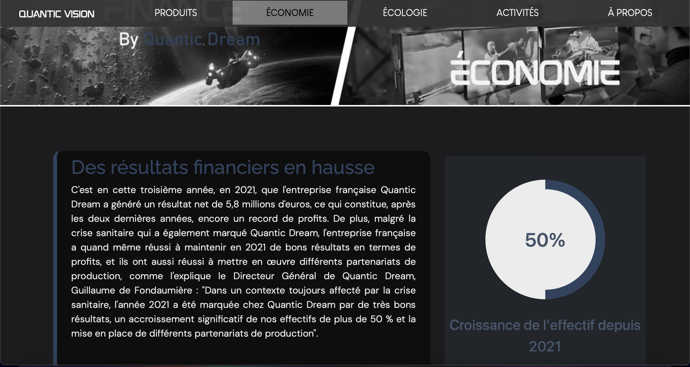
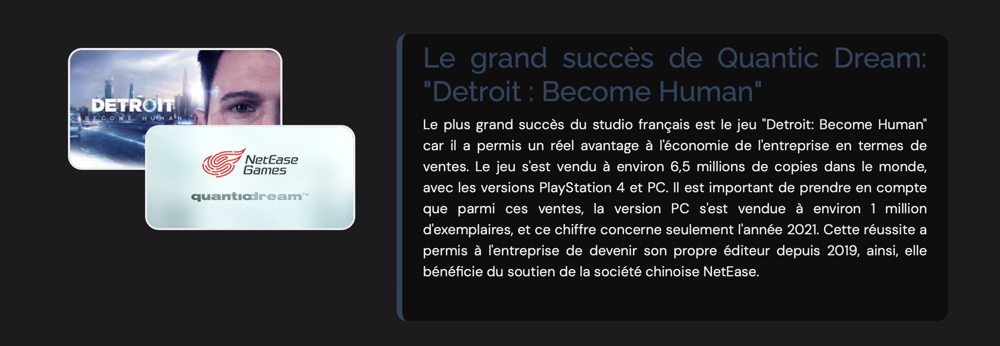
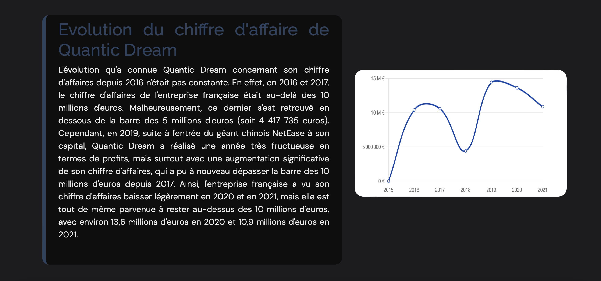
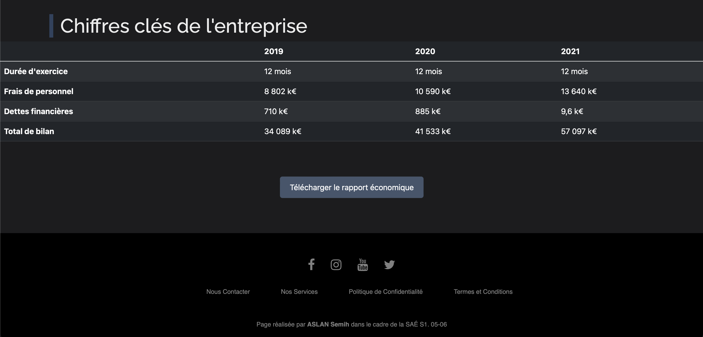

L'UE5, dédiée à la gestion de projets, englobe des compétences clés en développement d'interfaces web, en gestion organisationnelle, et en communication. Elle se distingue aussi par une SAE orientée vers le recueil des besoins, une étape cruciale dans la conduite de projets informatiques réussis.
Pour l'UE6, l'accent est mis sur le travail d'équipe en informatique, avec des cours approfondissant le développement web, la gestion organisationnelle, les fondements de l'économie durable, l'anglais et le projet personnel et professionnel ainsi qu'une SAE dédiée à l'environnement économique et écologique complètent cette UE, mettant en valeur l'importance de la collaboration et de la durabilité dans le secteur informatique.
Dans le cadre de la SAE 5, j'ai eu l'opportunité de concevoir la page Économie du site Quantic Vision. Cette page illustre les résultats financiers croissants de l'entreprise, soulignant le succès notable de jeux comme "Detroit: Become Human" et l'impact de partenariats stratégiques. J'ai intégré des visuels et des statistiques clés pour démontrer la croissance et la performance économique de l'entreprise.




Pendant la SAE 6, j'ai eu l'opportunité de contribuer à la rédaction du rapport économique de Quantic Vision. Ce document approfondit l'évolution du chiffre d'affaires, les étapes clés de l'entreprise et ses perspectives financières. Le rapport est accessible en ligne, permettant aux utilisateurs de se plonger dans l'analyse détaillée de la santé financière de Quantic Vision.
Au cours des SAE pour les unités UE5 et UE6, j'ai développé et renforcé un ensemble de compétences techniques et collaboratives précieuses. J'ai conçu une page HTML complète, maîtrisant l'emploi de HTML et CSS pour structurer et styliser le contenu efficacement, tout en intégrant des éléments dynamiques via JavaScript. Cette tâche m'a également amené à effectuer des recherches approfondies pour rassembler des données fiables sur la situation économique de Quantic Dream, ce qui a affiné mes capacités d'analyse et de synthèse d'informations complexes. De plus, la rédaction d'une partie du rapport économique en collaboration avec mon groupe a renforcé mon esprit d'équipe et ma communication, compétences clés pour tout projet collectif réussi dans le domaine informatique.